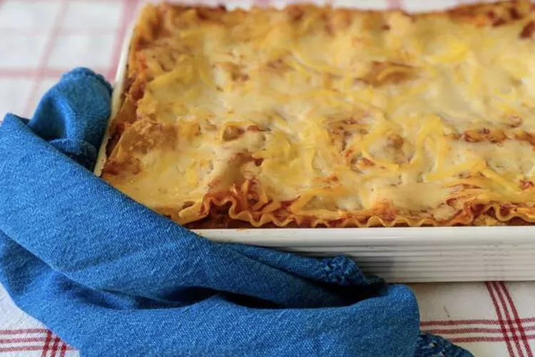

Homemade Lasagna

This is my mom's special homemade lasagna recipe with a meaty,made-from-scratch tomato sauce and a deliciously cheesy filling. A more traditional homemade lasagna filling would be made with ricotta but my mom's recipe calls for a blend of small-curd cottage cheese and Parmesan. I have found none better anywhere. Serve with a leafy green salad and crusty garlic bread.
more datelies :
- Prep Time: 1 hr 25 mins
- Cook Time: 1 hr 15 mins
- Additional Time: 10 mins
- Total Time: 2 hrs 50 mins
- Servings: 8
- Servings: 1 9x13-inch lasagna
Jump to Nutrition Facts
Homemade lasagna isn't as hard to make as it seems. Don't be intimidated by all the layers of delicious Italian flavor — try this homemade lasagna recipe today!

Homemade Lasagna Ingredients
These are the ingredients you'll need to make this top-rated homemade lasagna recipe:
- Meat:This lasagna recipe starts with a pound of ground meat (½ pound ground pork, ½ pound lean ground beef).
- Onion:A diced onion is cooked until translucent with the ground meat.
- Canned tomatoes:You'll need a can of tomato sauce and a can of crushed tomatoes.
- Fresh herbs:For fresh flavor, chop two tablespoons of parsley and crush one clove of garlic.
- Sugar:A dash of sugar balances out all of the acidity from the tomatoes.
- Spices and seasonings:This homemade lasagna is seasoned with dried basil, dried oregano, salt, and black pepper.
- Noodles:Of course, you'll need lasagna noodles! This recipe calls for uncooked noodles, but you can use the oven-ready variety to save time.
- Cheese:The cheese layer is made up of cottage cheese and Parmesan. You'll also need shredded mozzarella.
- Eggs:Eggs make the cheese layer extra creamy. Plus, they act as a binding agent (which means they hold the layer together).

How to Make Homemade Lasagna
Making homemade lasagna much easier than it looks. You'll find the full, step-by-step recipe below — but here's a brief overview of what you can expect:
- Cook the meat: Cook the ground meat in a skillet until browned and crumbly. Add the onion and continue cooking until it's translucent. Stir in the canned tomato products, half of the parsley, garlic, basil, 1.5 teaspoons of salt, oregano, and sugar.
- Cook the noodles: Boil the lasagna noodles in lightly salted water until they're al dente.
- Make the cheese layer: Mix cottage cheese, Parmesan cheese, eggs, the remaining parsley, the remaining salt, and pepper in a bowl.
- Assemble the lasagna: Layer the ingredients according to the recipe (starting with sauce and ending with mozzarella) until the lasagna is assembled.
- Bake the lasagna: Cover with foil and bake in the preheated oven for about half an hour. Remove the foil and continue baking until the top is golden brown.
How Long to Cook Lasagna
In an oven preheated to 375 degrees F, this homemade lasagna should be perfectly baked in about 50 minutes (30-40 minutes covered, 5-10 minutes uncovered).
How to Store and Freeze Lasagna
Allow the homemade lasagna to cool completely, then transfer the leftovers to an airtight container. Store in the refrigerator for up to four days. Reheat in the oven or in the microwave.
If you plan to freeze lasagna, it's best to bake it in a foil pan. Allow it to cool completely, then tightly wrap the entire dish in storage wrap. Next, wrap it in at least one tight layer of aluminum foil. Freeze for up to three months. Thaw in the fridge overnight and reheat in the oven or microwave.
Ingredients
- ½ pound ground pork
- ½ pound lean ground beef
- ½ cup minced onion
- 1 (28 ounce) can crushed tomatoes
- 1 (8 ounce) can tomato sauce
- 2 tablespoons chopped fresh parsley, divided
- 1 clove garlic, crushed
- 1 ½ teaspoons dried basil
- 1 ½ teaspoons salt
- ½ teaspoon dried oregano
- ⅛ teaspoon white sugar
- 1 (16 ounce) package lasagna noodles
- 1 pound small-curd cottage cheese
- ¾ cup grated Parmesan cheese
- 3 large eggs
- 2 teaspoons salt
- ¼ teaspoon ground black pepper
- 1 (16 ounce) package shredded mozzarella cheese
Directions
Step 1
Combine pork and ground beef in a large, deep skillet over medium-high heat; cook and stir until browned and crumbly, 5 to 7 minutes. Add onion and cook until translucent, about 5 minutes.
Step 2
Stir in crushed tomatoes, tomato sauce, 1 tablespoon fresh parsley, garlic, basil, salt, oregano, and sugar. Reduce heat to medium-low and simmer, stirring occasionally, for 30 minutes.
Step 3
While the sauce is simmering, bring a large pot of lightly salted water to a boil. Cook lasagna noodles in the boiling water, stirring occasionally, until tender yet firm to the bite, 8 to 10 minutes. Drain and set aside.
Step 4
While the noodles are cooking, preheat the oven to 375 degrees F (190 degrees C).
Step 5
While the noodles are cooking, preheat the oven to 375 degrees F (190 degrees C).
Step 6
Assemble lasagna: Spread a spoon or two of sauce over the bottom of a 9x13-inch baking dish just to to coat it. Place two layers of noodles over the sauce to cover. Layer with 1/2 of the cheese mixture, 1/2 of the remaining sauce, and 1/2 of the mozzarella cheese. Repeat layers once more using the remaining noodles, cheese mixture, sauce, and mozzarella. Cover the baking dish with aluminum foil.
Step 7
Bake in the preheated oven for 30 to 40 minutes. Remove the foil and bake until cheese is golden brown, 5 to 10 more minutes.
Step 8
Remove from the oven and let stand for 10 minutes before cutting and serving.
Tips
Feel free to substitute ricotta cheese for the cottage cheese for a more traditional cheese filling. You can also add layers of veggies (such as spinach and mushrooms) when layering your lasagna.